भरोसा कृषि बहुउद्देश्यीय प्रा. लि.
भरोसा कृषि बहुउद्देश्यीय प्रा. लि.
It is organic plant booster and surfactant.
It made from Chitosan 100 %
– Help plant grow faster and strong and reduce chemical product – Biological products without chemical and poison
– Improve root funtion to find a food quickly and eat a lot
– Make antibody and diseased insect, Plant will have antibody
– Prevent and Stop growth of fungi and bacteria
– Improving and Adjust ground soil and environment
– low risk for user and consumer to get poison, don’t have poison matter in products and environment
– Can use with every vegetable and flower and distinct plant
Usage Chito Plus Chitosan Solution for plant
– Put a seed in solution before plant : 20 cc. mix water 1 lite 12-24 hours before grow.
– Rice : 40 cc. mix water 20 lites spray all plant every15-20days –Flower : 10-20 cc. mix water 20 lites spray all plant and around the ground every 7-10 days.
– Vegetable : 20 cc. mix water 20 lites spray all plant and around the ground every 7-10 days.
– Fruit ,Rubber, Palm : 40 cc. mix water 20 lites every 15-20 days.
For the fruit use Chitosan can help the customer keep the fruit longer.
Increase Shelf life of the fruit
For Rubber use chitosan in the cut to prevent the fungus and the wound will be healed faster.
Indication: can use mix with every fertilizer. Keep without sunshine and shake gallon before use
 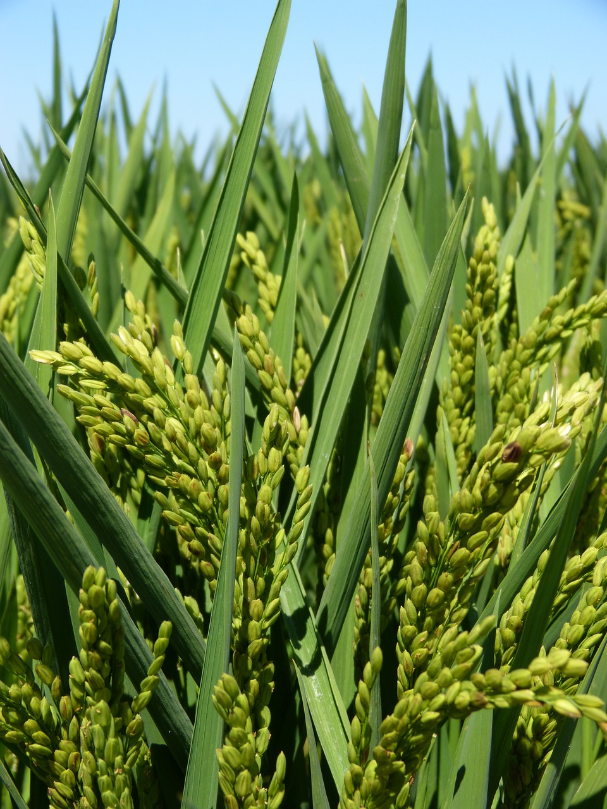
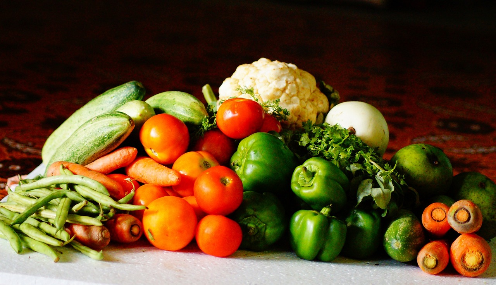
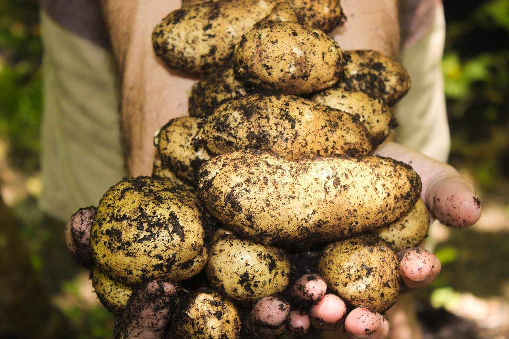
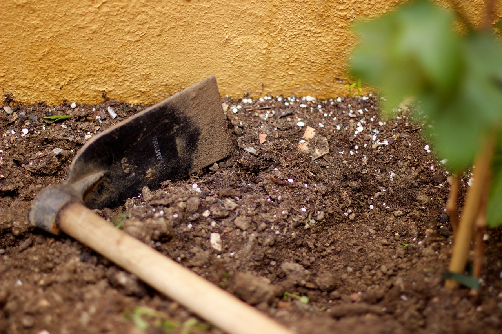
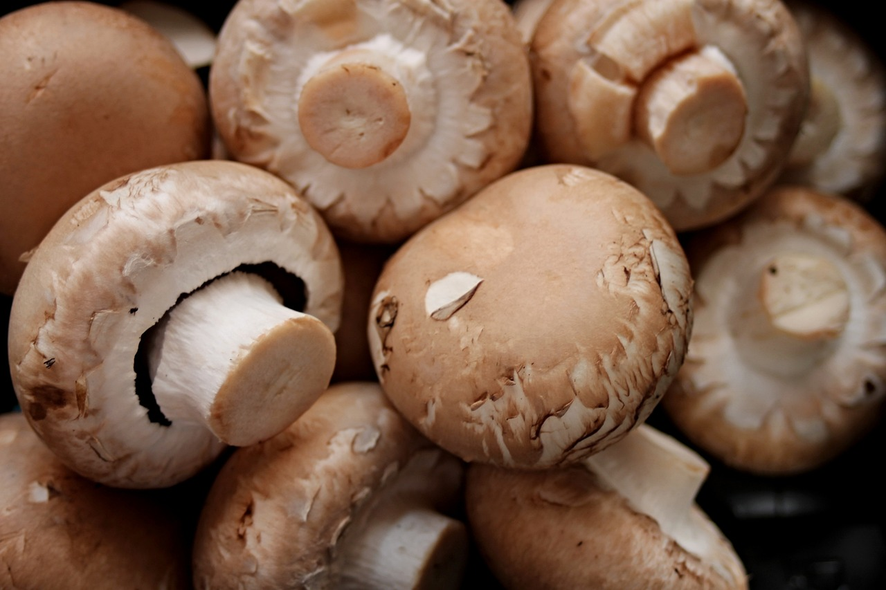
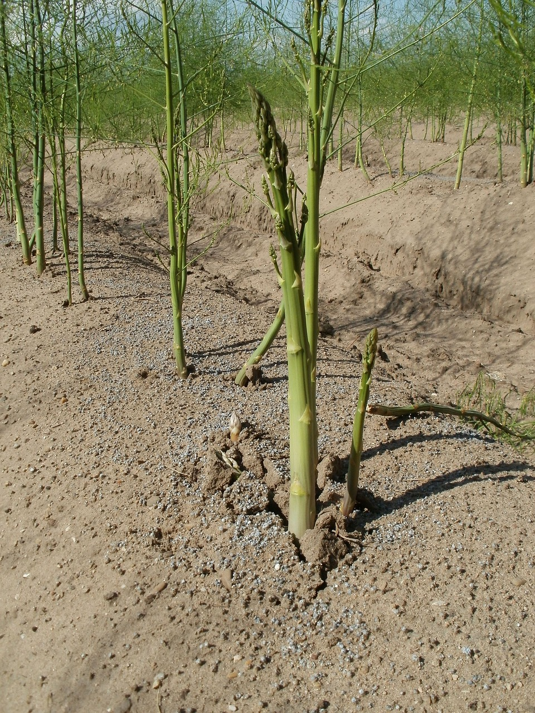
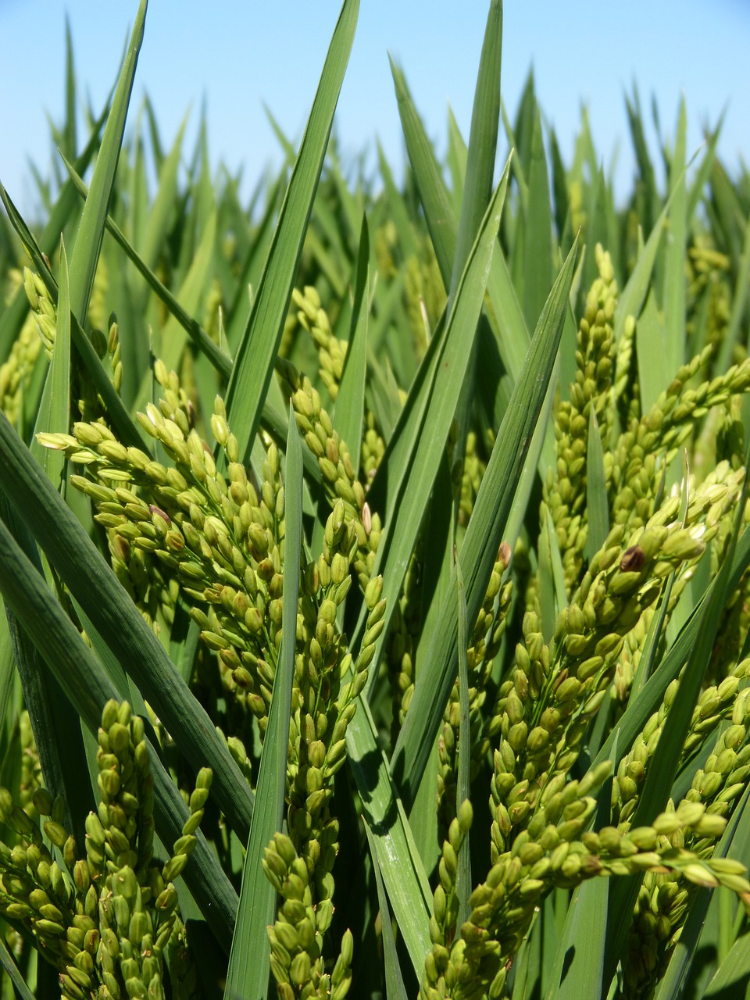
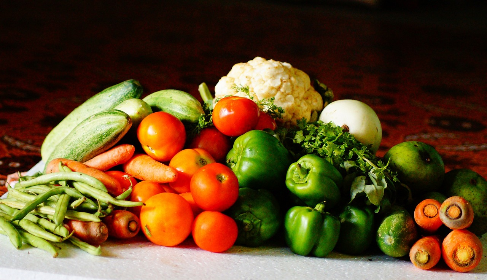
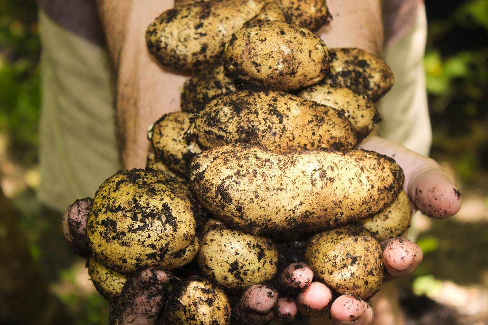
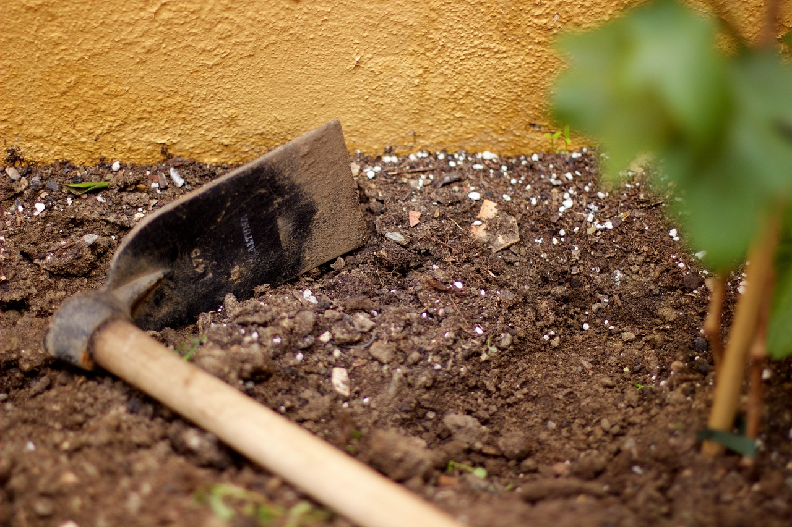
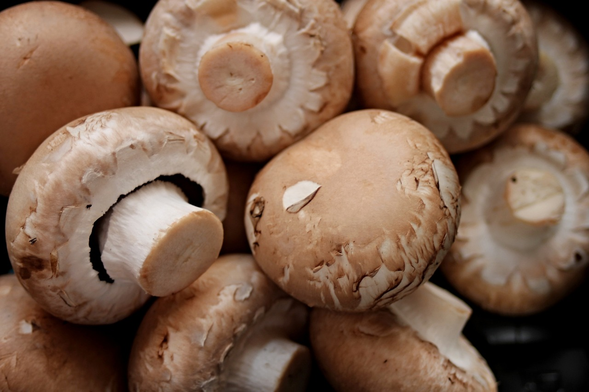
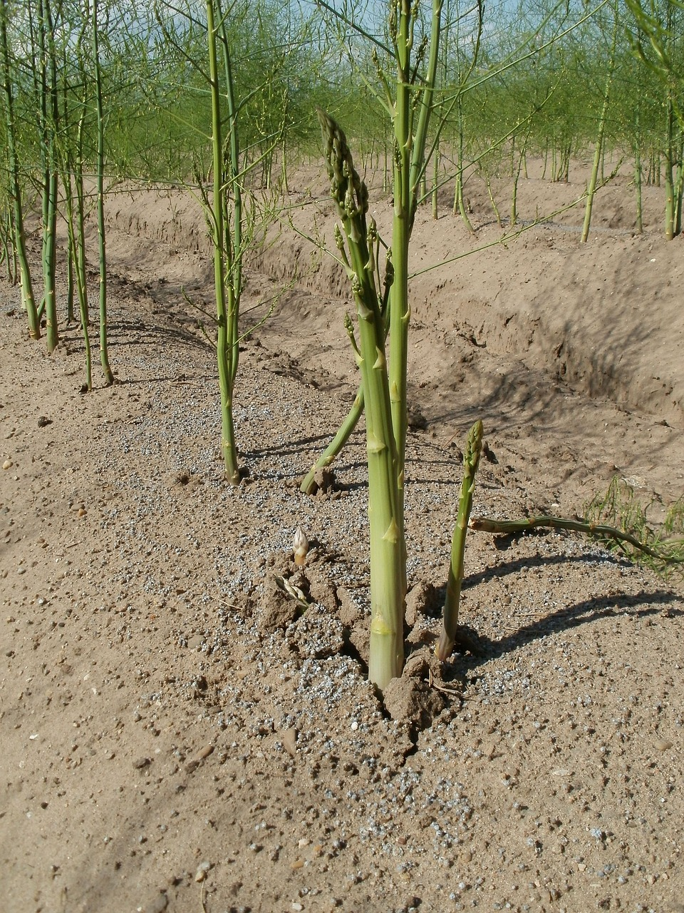
Chito Plus+
created with
Website Builder Software .